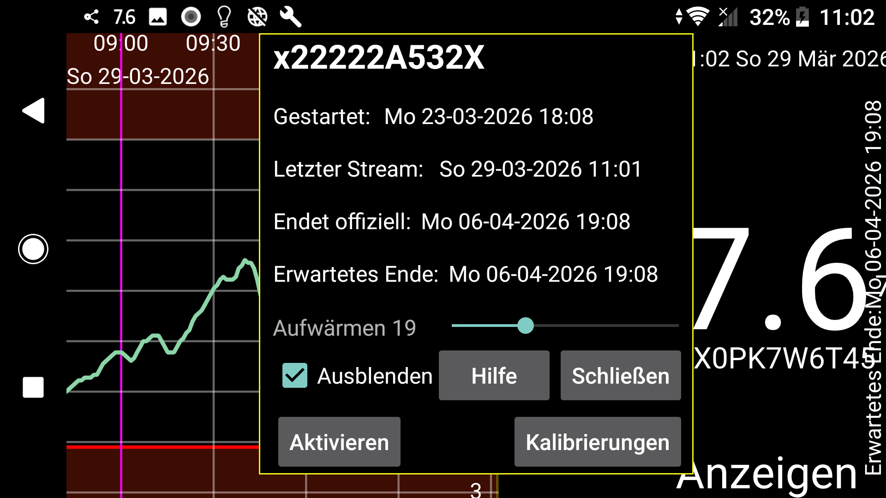

Zeigt Start, letzten Stream, letzten Scan sowie erwartete und offizielle Endzeiten des Sensors an.
Aufwärmen: Bei Sibionics- und Aidex-X-Sensoren können Sie die Anzahl der Minuten der Aufwärmphase ändern. Alle Funktionen ignorieren Daten während der Aufwärmphase: Kurve auf dem Bildschirm, Statistiken, exportierte Daten und im Webserver sichtbare Daten. Auch rückwirkend.
Ausblenden: Durch Aktivieren dieser Option wird die Kurve ausgeblendet. Sie können die Kurve nicht nur durch Deaktivieren wieder sichtbar machen, sondern auch durch Drücken von „Anzeigen“ unten rechts auf dem Bildschirm.
Kalibrierungen: Wenn Sie im linken Menü → Einstellungen → Kalibrierung das Blutzucker-Label angegeben und über das linke mittlere Menü → Neue Menge Blutzuckermessungen eingegeben haben, die nicht ausgeschlossen wurden, können Sie auf die Schaltfläche „Kalibrierungen“ drücken, um eine Liste der vorgenommenen Kalibrierungen zu erhalten. Siehe: https://www.juggluco.nl/Juggluco/index.html#calibration
Aktivieren: Bei beendeten Sensoren wird die Schaltfläche „Aktivieren“ angezeigt. Durch Drücken dieser Schaltfläche können Sie den Sensor erneut verwenden, ohne die Datenmatrix auf der Verpackung zu scannen. Sie können dies auch bei Libre-2- und Libre-3-Sensoren verwenden, aber wenn Sie den Sensor mit Juggluco auf einem anderen Telefon gescannt haben, müssen Sie den Sensor immer erneut per NFC scannen, um ihn wieder verfügbar zu machen.